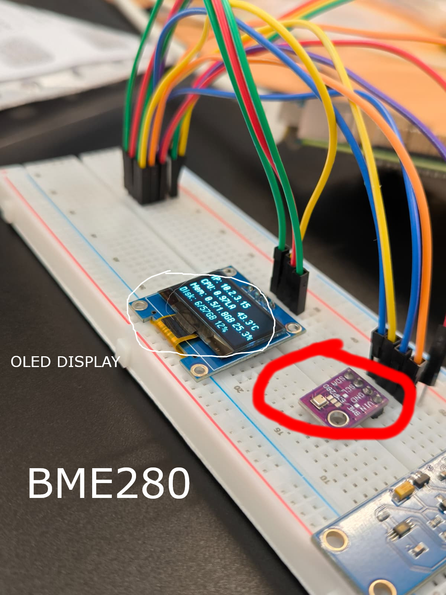

¿Que hacemos?
"Donde otros solo ven nubes, nosotros vemos datos. Transformamos el clima en conocimiento, con la curiosidad como motor. Una Raspberry Pi, mil preguntas, infinitas respuestas. No predecimos el futuro, lo medimos."
Noticia de la semana
Conectamos el primero de tantos, el BME280, haz click y hecha un vistazo.
